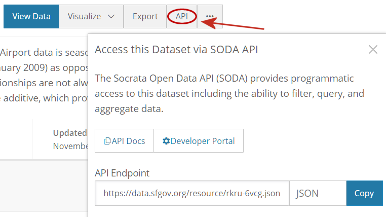
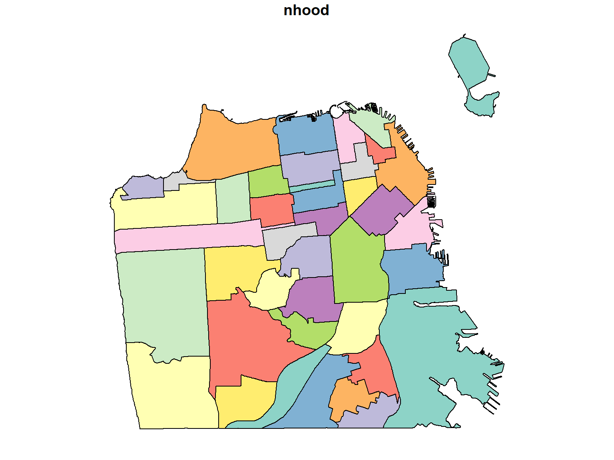

Using the Socrata API
The Socrata Open Data API (SODA) allows you to programmatically access a wealth of open data resources.
Used by governments, non-profits, and NGOs around the world.
DataSF.org is built upon Socrata Open Data.
Important concept: Every dataset has its own URL or endpoint:
Human-readable URL: (aka Data Page)
https://soda.demo.socrata.com/dataset/USGS-Earthquakes-for-2012-11-01-API/4334-bgaj
SoDA URL (this is what you use to import into
R)
http://soda.demo.socrata.com/resource/4334-bgaj.csv
https://data.ct.gov/resource/y6p2-px98.json

Take note of the extension (csv, json, geojson, etc.). This will tell you which function(s) you’ll need to import it.
The RSocrata package was developed by the City of Chicago. It has functions to import data from a SODA API endpoint.
First install RSocrata from CRAN or GitHub (requires remotes, see below):
The main function to read in tabular data is:
Let’s import a sample dataset of earthquake locations using the SODA API
## Import earthquake locations for one week in September 2012
earthquakes_df <- read.socrata("http://soda.demo.socrata.com/resource/4334-bgaj.csv")
glimpse(earthquakes_df)## Rows: 1,007
## Columns: 9
## $ source <chr> "nn", "ci", "nc", "nn", "nn", "pr", "hv", "hv", "nc", "nc", "ak", "pr", "nc", "nc", "ci", "ci", "…
## $ earthquake_id <chr> "00388610", "15215753", "71842370", "00388609", "00388607", "12258012", "60397836", "60397821", "…
## $ version <chr> "9", "0", "0", "9", "9", "0", "2", "1", "1", "1", "1", "0", "0", "0", "0", "0", "0", "0", "0", "0…
## $ datetime <dttm> 2012-09-14 22:38:01, 2012-09-14 22:14:45, 2012-09-14 22:14:21, 2012-09-14 22:10:19, 2012-09-14 2…
## $ magnitude <dbl> 2.7, 1.5, 1.4, 1.5, 1.7, 3.1, 1.8, 2.3, 1.6, 2.3, 2.4, 3.3, 1.0, 1.9, 1.3, 2.3, 1.4, 1.6, 1.5, 1.…
## $ depth <dbl> 7.6, 10.6, 0.0, 8.2, 6.4, 20.0, 6.0, 30.8, 2.1, 27.8, 3.2, 74.0, 8.5, 2.6, 3.4, 6.9, 8.6, 10.3, 4…
## $ number_of_stations <int> 15, 35, 21, 29, 29, 6, 17, 36, 29, 13, 30, 4, 17, 10, 39, 108, 19, 13, 53, 14, 6, 16, 26, 15, 17,…
## $ region <chr> "Nevada", "Southern California", "Northern California", "Central California", "Central California…
## $ location <chr> "(41.1085, -117.6135)", "(34.525, -118.1527)", "(38.8023, -122.7685)", "(36.9447, -117.6778)", "(…
json is another common file format for data, and is often used to save tabular data.
Let’s load the movie locations dataset from SF Data.
## Rows: 2,084
## Columns: 11
## $ title <chr> "The Enforcer", "Quitters", "A Jitney Elopement", "A Jitney Elopement", "All About Eve", "D.O.A",…
## $ release_year <chr> "1976", "2015", "1915", "1915", "1950", "1950", "1980", "1950", "1971", "1924", "2020", "1971", "…
## $ locations <chr> "Hall of Justice", "Wine Impression", "20th and Folsom Streets", "Golden Gate Park", "Curran Thea…
## $ production_company <chr> "Warner Bros. Pictures", "Frederick & Ashbury, LLC.", "The Essanay Film Manufacturing Company", "…
## $ distributor <chr> "Warner Bros. Pictures", NA, "General Film Company", "General Film Company", "Twentieth Century F…
## $ director <chr> "James Fargo", "Noah Pritzker", "Charles Chaplin", "Charles Chaplin", "Joseph L. Mankiewicz", "Ru…
## $ writer <chr> "Stirling Silliphant", "Noah Pritzker", "Charles Chaplin", "Charles Chaplin", "Joseph L. Mankiewi…
## $ actor_1 <chr> "Clint Eastwood", "Kara Hayward", "Charles Chaplin", "Charles Chaplin", "Bette Davis", "Edmond O'…
## $ actor_2 <chr> "Tyne Daly", "Mira Sorvino", "Edna Purviance", "Edna Purviance", "Anne Baxter", "Pamela Britton",…
## $ actor_3 <chr> "Harry Guardino", "Saffron Burrows", NA, NA, "George Sanders", "Luther Adler", "Felipe Rose", "Lu…
## $ fun_facts <chr> NA, NA, NA, "During San Francisco's Gold Rush era, the Park was part of an area designated as the…
Many organizations that share data or computing services use API tokens or keys to manage demand on their servers, and/or enforce a usage policy. A token is a seemingly random series of character, a little bit like a password.
SFData.org does not require tokens, but you can get throttled if too many people use it at once. Create a token at the Developer Portal.
If you have an API token, you can send it using the optional app_token argument.
API Token Security
Because APIs are like passwords, and in some cases are connected to a credit card, it’s not wise to enter a token in any code that will be shared. For tips on how to protect your API key, see the Geocoding slides.
Neighborhood boundaries can be imported as well. The SODA rest end point is:
Note the extension: json. The json format is only for tabular data, which means this is just the attribute table.
To get the points / lines / polygons, you need to:
Let’s import SF Neighborhood Boundaries, using the URL above but changing the extension to geojson.
library(sf)
nb_bnd <- read_sf("https://data.sfgov.org/resource/j2bu-swwd.geojson" |> URLencode())
plot(nb_bnd['nhood'])
Query parameters are added on to the end of a SODA URL, usually starting with the ‘?’ character.
For example the query parameter below:
https://data.sfgov.org/resource/wwmu-gmzc.json?release_year=2011
…tells the server that you only want film locations for movies that were released in 2011.
There are many reasons why you may want to use query parameters:
To add query parameters, you need to get familiar with the columns in the dataset.
You can specify a simple filter when you import the data by adding a column name and value at the end the of the URL.
Query parameters should always start with ‘?’
## Add a simple parameter query to import 2008 films only
movie2008_df <- read.socrata("https://data.sfgov.org/resource/wwmu-gmzc.json?release_year=2008")
glimpse(movie2008_df)## Rows: 12
## Columns: 10
## $ title <chr> "Milk", "Milk", "Milk", "Milk", "Milk", "Milk", "Milk", "Milk", "Milk", "Milk", "Milk", "Milk"
## $ release_year <chr> "2008", "2008", "2008", "2008", "2008", "2008", "2008", "2008", "2008", "2008", "2008", "2008"
## $ locations <chr> "Duboce Park", "City Hall", "Chinatown", "424 Sansome Street", "29th and Dolores Street", "El Cam…
## $ production_company <chr> "Focus Features", "Focus Features", "Focus Features", "Focus Features", "Focus Features", "Focus …
## $ distributor <chr> "Focus Features", "Focus Features", "Focus Features", "Focus Features", "Focus Features", "Focus …
## $ director <chr> "Gus Van Sant", "Gus Van Sant", "Gus Van Sant", "Gus Van Sant", "Gus Van Sant", "Gus Van Sant", "…
## $ writer <chr> "Dustin Lance Black", "Dustin Lance Black", "Dustin Lance Black", "Dustin Lance Black", "Dustin L…
## $ actor_1 <chr> "Sean Penn", "Sean Penn", "Sean Penn", "Sean Penn", "Sean Penn", "Sean Penn", "Sean Penn", "Sean …
## $ actor_2 <chr> "Emile Hirsch", "Emile Hirsch", "Emile Hirsch", "Emile Hirsch", "Emile Hirsch", "Emile Hirsch", "…
## $ fun_facts <chr> NA, "The dome of SF's City Hall is almost a foot taller than that of the US Capitol Building. In …
Query Parameter Syntax Rules
SoQL expressions (like SQL), are generally case insensitive. This includes field names.
SoQL expressions should not include spaces except when part of a literal string, or to to set keywords apart (like AND or BETWEEN). For legibility, you may also put spaces around operators like: = > <
Use single quotes to delineate text with embedded spaces. Field names and text values that don’t have spaces don’t need to be quoted.
Query parameter syntax can be unforgiving error messages are generally unhelpful! A good way to learn is to start with simple queries and build-up.
For queries that go beyond a simple filter, we can use the SoQL Query Language. SoQL is similar to SQL (Strctured Query Language).
SoQL expressions consists of one or more Clauses. The main SoQL clauses are: WHERE, LIMIT, SELECT, ORDER, and GROUP.
You add one or more SoQL clauses to the end of the URL, separating them with & and starting each clause with $
http://…/xxxxx.json?&#select=XXXXXXX&#where=XXXXXX&#order=XXXXXX
To filter rows use the where clause:
## Use a WHERE clausee to get locations for movies released in 2010
filmloc2010_df <- read.socrata("https://data.sfgov.org/resource/wwmu-gmzc.json?$where=release_year=2010")
nrow(filmloc2010_df)
## For compound expressions, use the keywords AND, OR, and NOT
## as part of the WHERE expression. Note here you need spaces.
## Get locations for movies released between 2010 AND 2013
filmloc2010_13_df <- read.socrata("https://data.sfgov.org/resource/wwmu-gmzc.json?$where=release_year>=2010 AND release_year <=2013")
nrow(filmloc2010_13_df)
## Because release_year is numeric, we can get the same thing
## using the 'between' keyword
filmloc201013_df2 <- read.socrata("https://data.sfgov.org/resource/wwmu-gmzc.json?$where=release_year BETWEEN 2010 AND 2013")
nrow(filmloc201013_df2)
## Filter on multiple columns
filmloc_hitchcock_df <- read.socrata("https://data.sfgov.org/resource/wwmu-gmzc.json?$where=director='Alfred Hitchcock' AND release_year=1963")
nrow(filmloc_hitchcock_df)## [1] 7
## [1] 76
## [1] 76
## [1] 1
Which film(s) did Alfred Hitchcock shoot in San Francisco in 1963?
Answer
To limit the number of records, add the limit clause at the end. This is particularly helpful when you are testing a query expression for a large dataset.
## Add the LIMIT clause to only get the top-five locations
filmloc2010_five_df <- read.socrata("https://data.sfgov.org/resource/wwmu-gmzc.json?$where=release_year=2010&$limit=5")
filmloc2010_five_df## title release_year production_company distributor director
## 1 Babies 2010 Canal+ Focus Features Thomas Balmes
## 2 Broken-A Modern Love Story 2010 RKW Films <NA> Ryan K. Whiting
## 3 Broken-A Modern Love Story 2010 RKW Films <NA> Ryan K. Whiting
## 4 God is a Communist?* (show me heart universe) 2010 Trismegistus Productions <NA> Jon Poznanter
## 5 Hereafter 2010 GT Films Warner Bros. Pictures Clint Eastwood
## writer actor_1 actor_2 locations
## 1 Thomas Balmes Bayar Hattie <NA>
## 2 Ryan K. Whiting <NA> <NA> Ina Coolbrith Park (1700 Taylor Street)
## 3 Ryan K. Whiting <NA> <NA> 0-100 block Halleck Street
## 4 Jon Poznanter John Wynn <NA> Sacramento & Washington Streets
## 5 Peter Morgan Matt Damon Cecile De France Hobart Building (582 Market Street)
Before we continue, let’s make our life a little easier.
Query parameter expressions (and REST endpoint URLs in general) can get very long! To make them easier to both read and write, we’ll start to construct them as separate pieces of text, then concatenate them into the final URL.
In Excel and other languages, we concatenate text using &. For example, ‘My’ & ‘Dog’ becomes ‘MyDog’
In R, we concatenate text with paste0() and paste(). Examples:
## [1] "MyDogHasFleas"## [1] "My Dog Has Fleas"
As you can see, paste() adds a separator character (by default a blank space, but you can change it with an argument). paste0() joins text without a separator.
You can also use paste0() and paste() with piping:
So far we’ve written parameter queries using the WHERE and LIMIT clauses. Next we’ll add SELECT, ORDER, and GROUP clauses.
SELECT allows you to i) pick the columns you want the server to send you, and ii) compute calculated expressions. If present, it is usually the first clause used in a SoQL expression.
## Define a variable for the REST Endpoint, including the '?'
movie_loc_url <- "https://data.sfgov.org/resource/wwmu-gmzc.json?"
## Define parameter query pieces for FILTER and WHERE
## Get just the title, release year, and director
pq_select <- "$select=release_year,title,director"
pq_where <- "&$where=release_year=2016"
filmloc_df <- read.socrata(movie_loc_url |>
paste0(pq_select, pq_where) |>
URLencode())
glimpse(filmloc_df)## Rows: 168
## Columns: 3
## $ release_year <chr> "2016", "2016", "2016", "2016", "2016", "2016", "2016", "2016", "2016", "2016", "2016", "2016", "2016",…
## $ title <chr> "Chance- Season 1 ep104", "Birth of the Dragon", "Birth of the Dragon", "Birth of the Dragon", "Birth o…
## $ director <chr> "Carl Franklin", "George Nolfi", "George Nolfi", "George Nolfi", "George Nolfi", "George Nolfi", "Georg…
URLencode() will convert spaces in a URL to %20, and change other special characters to other percent codes. While not always necessary, this is good practice for URLs.
You can specify the order of the rows returned by appending an ORDER clause at the very end. Note the ORDER expression can include fields that aren’t selected to be part of the output.
## Specify the order of the rows returned
pq_select <- "$select=director,title"
pq_order <- "&$order=release_year,director"
filmloc_df <- read.socrata(movie_loc_url |>
paste0(pq_select, pq_where, pq_order) |>
URLencode())
head(filmloc_df)## director title
## 1 Alexandra Cunningham and Kem Nunn Chance- Season 1 ep107
## 2 Alexandra Cunningham and Kem Nunn Chance- Season 1 ep110
## 3 Alexandra Cunningham and Kem Nunn Chance- Season 1 ep107
## 4 Alexandra Cunningham and Kem Nunn Chance- Season 1 ep107
## 5 Alexandra Cunningham and Kem Nunn Chance- Season 1 ep107
## 6 Alexandra Cunningham and Kem Nunn Chance- Season 1 ep110
If you want to remove duplicates, add distinct as part of the select clause. This will return unique combinations of the fields returned. Note: when using distinct, you must also specify the ORDER.
pq_select <- "$select=distinct release_year,director,title"
pq_where <- "&$where=release_year=2016"
pq_order <- "&$order=release_year,director"
filmloc_df <- read.socrata(movie_loc_url |>
paste0(pq_select, pq_where, pq_order) |>
URLencode())
kable(filmloc_df)| release_year | director | title |
|---|---|---|
| 2016 | Alexandra Cunningham and Kem Nunn | Chance- Season 1 ep107 |
| 2016 | Alexandra Cunningham and Kem Nunn | Chance- Season 1 ep110 |
| 2016 | Andrew Haigh | Looking "Special" |
| 2016 | Carl Franklin | Chance- Season 1 ep104 |
| 2016 | George Nolfi | Birth of the Dragon |
| 2016 | Lenny Abrahamson | Chance- Season 1 ep102 |
| 2016 | Lenny Abrahamson | Chance - Season 1 Pilot |
| 2016 | Michael Lehmann | Chance- Season 1 ep103 |
| 2016 | Peter Elkoff and Victoria Morrow | Chance- Season 1 ep108 |
| 2016 | Sara Gran | Chance- Season 1 ep106 |
| 2016 | Sara Gran and Pete Begler | Chance- Season 1 ep109 |
| 2016 | Steven Bochcho | Murder in the First, Season 3 |
| 2016 | Tom Brown | Pushing Dead |
| 2016 | Victoria Morrow | Chance - Season 1ep105 |
| 2016 | Victoria Morrow | Chance - Season 1 ep105 |
| 2016 | Wachowski Siblings | Sense8 - Season 2 |
The real power of SoQL queries is not just retrieving data, but letting the server do calculations for you!
In addition to field names, the SELECT expression can also include calculated expressions, including count, sum, avg, min, and max. The arguments for these equations is usually a field name, or an expression that uses fields.
## Define a select statement that will count the number of records and
## sum up the release year values
pq_select <- "$select=count(release_year) as num_locations,sum(release_year)"
filmloc_df <- read.socrata(movie_loc_url |>
paste0(pq_select) |>
URLencode())
filmloc_df## num_locations sum_release_year
## 1 2084 4174981
Note the use of the ‘AS’ keyword above, which allows you to rename a column in the results (aka alias)
Which years are included in the above query?
Answer
All of them (because there’s no where clause).
The GROUP clause allows you to group rows on a field. It comes after the SELECT clause but before the WHERE clause. When you use GROUP, the SELECT clause often includes a calculated expression.
## Count the number of film shoots per year in the 1970s
pq_select <- "$select=release_year,count(title)"
pq_group <- "&$group=release_year"
pq_where <- "&$where=release_year BETWEEN 1970 and 1979"
pq_order <- "&$order=release_year"
filmloc_df <- read.socrata(movie_loc_url |>
paste0(pq_select, pq_group, pq_where, pq_order) |>
URLencode())
filmloc_df## release_year count_title
## 1 1970 1
## 2 1971 19
## 3 1972 14
## 4 1973 18
## 5 1974 34
## 6 1976 13
## 7 1977 3
## 8 1978 45
## 9 1979 25
In general, the order of SoQL clauses should be:
Which director shot in the most number of locations in the 1970s?
[Solution]
## Count the number of film locations by director
pq_select <- "$select=director,count(title) as num_locations"
pq_group <- "&$group=director"
pq_where <- "&$where=release_year BETWEEN 1970 and 1979"
pq_order <- "&$order=num_locations desc"
filmloc_df <- read.socrata(movie_loc_url |>
paste0(pq_select, pq_group, pq_where, pq_order) |>
URLencode())
head(filmloc_df)## director num_locations
## 1 Nicholas Meyer 24
## 2 Colin Higgins 22
## 3 Philip Kaufman 16
## 4 Don Siegel 15
## 5 Ted Post 15
## 6 Richard Rush 13⇒ Nicholas Meyer shot in the most locations.
Note the inclusion of as in the select clause to give the calculated column a custom name, and desc in the order clause to order the rows in descending order.
If you need even more data munging, you can pass a full fledged SQL expression as the query clause.
In this example, we’ll compute the number of 911 calls by neibhgorhood for a one week. We’ll then plot them on chloropleth map.
General workflow
1. The Fire Department Calls for Service page tells us:
2. URL for the API:
We also see there is a geojson version. But in this case we’re not really interested in the exact locations, just the neighborhood name (which is saved in column neighborhoods_analysis_boundaries).
3. Write a SoQL expression.
We’ll build our expression in stages. First let’s just see if we can select a few records using the select and limit clauses:
ems_resp_url <- "https://data.sfgov.org/resource/nuek-vuh3.json?"
## Select the fields we'll need
pq_select <- "$select=call_date,incident_number,neighborhoods_analysis_boundaries"
pq_limit <- "&$limit=10"
ems_df <- read.socrata(ems_resp_url |>
paste0(pq_select, pq_limit) |>
URLencode())
glimpse(ems_df) ## Rows: 10
## Columns: 3
## $ call_date <dttm> 2006-12-17, 2006-12-17, 2006-12-17, 2006-12-17, 2006-12-17, 2006-12-17, 2006-12-1…
## $ incident_number <chr> "06099100", "06099101", "06099101", "06099101", "06099102", "06099103", "06099104"…
## $ neighborhoods_analysis_boundaries <chr> "Glen Park", "Chinatown", "Chinatown", "Chinatown", "Tenderloin", "South of Market…
Next, let swap the limit clause with a where clause to filter the results on call_date:
pq_where <- "&$where=call_date between '2019-10-01T00:00:00' and '2019-10-07T23:59:59'"
ems_df <- read.socrata(ems_resp_url |>
paste0(pq_select, pq_where) |>
URLencode())
glimpse(ems_df) ## Rows: 6,469
## Columns: 3
## $ call_date <dttm> 2019-10-01, 2019-10-01, 2019-10-01, 2019-10-01, 2019-10-01, 2019-10-01, 2019-10-0…
## $ incident_number <chr> "19117546", "19117546", "19117547", "19117547", "19117547", "19117548", "19117548"…
## $ neighborhoods_analysis_boundaries <chr> "Financial District/South Beach", "Financial District/South Beach", "South of Mark…
Lastly we add distinct to the select clause so we get unique combinations of neighborhood name and incident number. As noted before, when using ‘distinct’ we also need to add the order clause:
## Download unique rows for neighborhood & incident id
pq_select <- "$select=distinct neighborhoods_analysis_boundaries as nhood,incident_number"
pq_order <- "&$order=neighborhoods_analysis_boundaries"
ems_df <- read.socrata(ems_resp_url |>
paste0(pq_select, pq_where, pq_order) |>
URLencode())
glimpse(ems_df)## Rows: 3,041
## Columns: 2
## $ nhood <chr> "Bayview Hunters Point", "Bayview Hunters Point", "Bayview Hunters Point", "Bayview Hunters Point", …
## $ incident_number <chr> "19117577", "19117601", "19117622", "19117635", "19117648", "19117654", "19117695", "19117697", "191…
Because the rows represent responses, and the SoQL language doesn’t have a function like count_distinct(), we’ll have to count up the records in R.
4. In R, we can now count the number of incidents per neighborhood:
## Compute the number of incidents per neighborhood
nb_num_calls <- ems_df |>
dplyr::group_by(nhood) |>
dplyr::summarise(num_calls = n())
nb_num_calls## # A tibble: 42 × 2
## nhood num_calls
## <chr> <int>
## 1 Bayview Hunters Point 139
## 2 Bernal Heights 38
## 3 Castro/Upper Market 78
## 4 Chinatown 50
## 5 Excelsior 57
## 6 Financial District/South Beach 263
## 7 Glen Park 23
## 8 Golden Gate Park 37
## 9 Haight Ashbury 40
## 10 Hayes Valley 56
## # ℹ 32 more rows
5.Download the neighborhood boundaries. This is a geojson object so we use sf::read_sf.
## Download the neighborhood boundaries
nb_bnd <- read_sf("https://data.sfgov.org/resource/j2bu-swwd.geojson" |> URLencode())
glimpse(nb_bnd)## Rows: 41
## Columns: 2
## $ nhood <chr> "Western Addition", "West of Twin Peaks", "Visitacion Valley", "Twin Peaks", "South of Market", "Treasure I…
## $ geometry <MULTIPOLYGON [°]> MULTIPOLYGON (((-122.4214 3..., MULTIPOLYGON (((-122.461 37..., MULTIPOLYGON (((-122.4039 3...…
6. Use dplyr to join the incidents-per-neighborhood table to the neighborhood boundaries attribute table, linking them by the neighboorhood name column (conveniently called ‘nhood’ in both tables).
## Join nb_num_calls to the attribute table of nb_bnd, so the
## column(s) in nb_num_calls will be availabe for symbolization.
nb_bnd <- nb_bnd |> left_join(nb_num_calls)
head(nb_bnd)## Simple feature collection with 6 features and 2 fields
## Geometry type: MULTIPOLYGON
## Dimension: XY
## Bounding box: xmin: -122.4761 ymin: 37.70833 xmax: -122.3588 ymax: 37.8333
## Geodetic CRS: WGS 84
## # A tibble: 6 × 3
## nhood geometry num_calls
## <chr> <MULTIPOLYGON [°]> <int>
## 1 Western Addition (((-122.4214 37.78557, -122.4214 37.78521, -122.4213 37.78486, -122.4212 37.78475, -... 66
## 2 West of Twin Peaks (((-122.461 37.75096, -122.4606 37.74994, -122.4604 37.74976, -122.4596 37.74902, -1... 80
## 3 Visitacion Valley (((-122.4039 37.71883, -122.4036 37.71834, -122.4031 37.71846, -122.4021 37.71872, -... 30
## 4 Twin Peaks (((-122.4469 37.75655, -122.4459 37.75641, -122.4458 37.75642, -122.4456 37.75645, -... 8
## 5 South of Market (((-122.4037 37.78404, -122.4027 37.78326, -122.4005 37.78503, -122.3999 37.78456, -... 368
## 6 Treasure Island (((-122.3636 37.82087, -122.3605 37.82012, -122.3606 37.8198, -122.3636 37.82054, -1... 9
7. Finally, make the map.
We’ll make the map with tmap, which offers the greatest number of options.
Today we saw:
Additional Resources
SF Open Data Developer Resources (go here to get an API token)